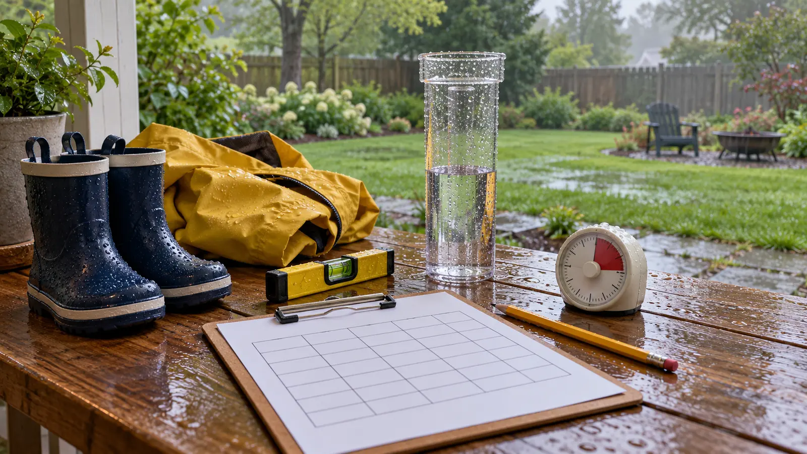

Date and time
Use the same scheduled observation time each day. If the reading is late, write the actual time instead of backdating it.
AT HOME · WEATHER LOG · EXPLORATION
Rainfall is a measurement problem, not an excuse to stand in a storm. Pick one safe location, record at one time, leave zeros intact and keep the project unofficial unless you join a trained network.

For seven consecutive observation times, how much water did one unchanged household gauge collect at one unchanged place? That is all. The project does not prove neighborhood rainfall, replace a National Weather Service or CoCoRaHS station, measure snowfall correctly, predict floods or certify a homemade container. Its value is consistency: same instrument, location, reader method and time.
Suggested ages are 7–12 with an adult choosing the site, checking weather and handling any mounting. That is an editorial family-work range, not an official program rule. Younger children can draw wet/dry symbols from indoors. Anyone may skip the outdoor step.
Best: a straight, purpose-built manual rain gauge whose instructions explain mounting and reading. Read its scale at eye level exactly as the maker directs. A household straight-sided container and ruler can support a private comparison activity, but shape, rim, splash, evaporation and scale errors mean the number should not be presented as official precipitation. Do not use a narrow-neck bottle, tapered cup or container that can break.
Official observations use standardized equipment and procedures. The National Weather Service describes an eight-inch standard gauge with a funnel, measuring tube, overflow can and calibrated stick; CoCoRaHS requires trained observers and approved four- or eight-inch equipment for network reports. If the family wants to submit data, join the program, complete its current training and use its required gauge. Do not upload this casual seven-day log as equivalent.
The NWS gauge-placement guide says to avoid large obstacles and artificial water, keep the top level, reduce splash-in and, where possible, place the gauge about twice as far from an object as that object is tall. Perfect exposure may be impossible in a family yard. Choose the best safe, accessible compromise and document the limitations.
Link each day to the current National Weather Service forecast or daily climate context only after the household reading is recorded. The forecast is not the answer key for one backyard, and a household gauge is not a verdict on radar.
Total: add only valid measured days. Keep missing days blank, not zero. Wettest observed day: name the largest valid reading and its actual observation interval. Method review: circle the biggest likely source of uncertainty—exposure, reading, timing, equipment or weather safety. The method review is more important than a neat total.
Do not compare two children's homemade gauges as winners unless the openings, shapes, scales, sites and times are meaningfully controlled. A wider container can collect more volume while recording the same rainfall depth; raw water volume is not automatically comparable. A standardized funnel and tube use known geometry to translate collected water into depth.
No rain all week: seven zeros, observed consistently, are a complete result. Compare the log with cloud notes; do not spray the gauge and label it weather. Unsafe weather: observe from a safe indoor location, record “delayed” or “missing,” and preserve the safety decision. Frozen precipitation: stop this liquid-rain method unless the exact gauge instructions and trained program cover winter measurement.
Low energy: make a dry/wet mark from indoors and leave the gauge untouched until the next safe adult check. No yard: use a building-approved gauge location only if management permits and the site is safe; otherwise compare daily official climate reports on paper without installing anything. For another short observation routine, use the seven-night Moon log. For forecast decisions, use the NOAA weather-radio guide and family cutoff plan.
Use a manual gauge already owned or borrow an appropriate one; paper, pencil, a level and the gauge instructions complete the kit. No purchase is required for the paper-only official-data version. If buying a gauge for citizen science, first read the program's current equipment requirement and training—do not choose by app connectivity or a product photo.
After the week, wash and store the gauge only as its manufacturer directs. Do not use collected water for drinking, pet bowls, plants requiring clean water or play. Wash hands after handling outdoor equipment. Keep mounting hardware and small parts away from younger children.
Skip outdoor installation where there is no safe legal site, a renter or building rule prohibits it, the only access crosses traffic or steep/icy ground, or severe weather would pressure someone to check. Modify to adult-only handling for children who cannot follow the thunder rule or leave the gauge untouched. Families seeking reportable science should join a trained observer network rather than relabel this activity.
Reviewed October 22, 2026 by Mr Adventure Dad Editorial Desk using National Weather Service gauge-equipment, placement and lightning-safety guidance, plus current CoCoRaHS equipment/training requirements. The seven-row card, timing and family adaptations are editorial. They are not official observer training or a claim that generic equipment produces reportable data. No affiliate links are attached. Report sourced corrections through About.
MAKE THE WEEK COUNT
Build the plan your family can finish well, then leave enough energy for the next part of the day.
More family plans